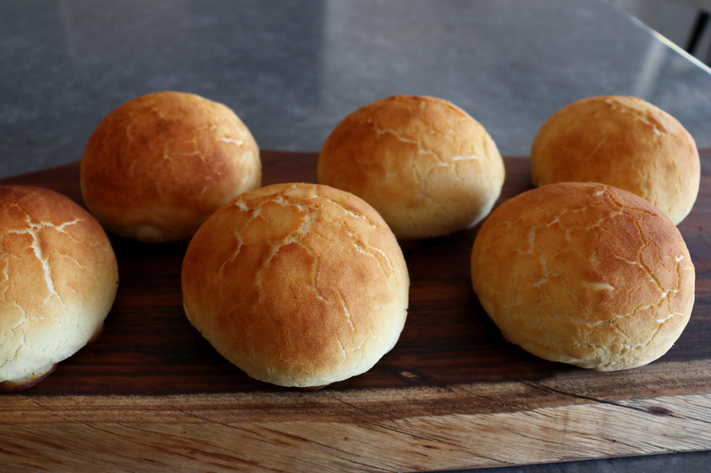

Tiger Bread (Dutch Crunch Rolls)

Description
It recently came to my attention that outside of San Francisco, these rolls aren't really well known, which I think is a real shame since this combines a nice, soft, tender white bread roll with a slightly sweet, beautifully crunchy, and gorgeous crust that (depending on how things go) may or may not look like a tiger's skin.
Ingredients
For the Dough:
- ½ cup milk
- ⅓ cup water
- 1 tablespoon white sugar
- 1 (.25 ounce) package active dry yeast
- 2⅔ cups all-purpose flour
- ¾ teaspoon kosher salt
- 1 tablespoon unsalted butter, melted
- 1 teaspoon unsalted butter, melted
For the Topping:
- ⅓ cup rice flour
- 1 tablespoon white sugar
- 1 teaspoon white sugar
- 1 pinch salt
- 1½ teaspoons vegetable oil
- ½ teaspoon sesame oil
- 1½ teaspoons active dry yeast
- ¼ cup warm water, or as needed
Directions
- Combine milk and water in a microwave-safe bowl; microwave in 10-second intervals until just warm to the touch, or 100 degrees F (38 degrees C). Add sugar and 1 package yeast to the bowl and stir together. Let sit for 15 to 20 minutes before using.
- Pour flour and salt into a mixing bowl and stir together with a fork. Make a well in the center and pour in the yeast mixture and melted butter. Stir with the fork until the mixture comes together to form a shaggy dough, 1 to 2 minutes. Switch to your hand and knead in the bowl until a ball of dough is formed.
- Transfer to work surface and knead until a very smooth, soft, elastic ball of dough forms, 7 to 8 minutes.
- Transfer into a lightly greased bowl, cover, and let rise in a warm spot until doubled in size, about 1 hour.
- Preheat the oven to 400 degrees F (200 degrees C). Line a baking sheet with a silicone baking mat.
- Stir rice flour, sugar, salt, vegetable oil, sesame oil, 1 1/2 teaspoons yeast, and 1/4 cup warm water together in a small bowl. Add more water if needed to form a thick, but spreadable mixture. This needs to be thin enough to spread over rolls without deflating them, but thick enough not to all run off on to the pan. Cover with plastic wrap and set aside until needed.
- Transfer risen dough to a work surface and press out all the air while rolling into a short, fat tube shape. Divide into 6 balls of dough.
- Shape each ball by pulling and pinching the dough at the bottom to form a smooth skin over the top surface of the dough ball. Transfer to the prepared baking sheet. Cover with a clean, dry tea towel, and let rise until doubled in size, about 30 minutes.
- Uncover rolls and use a small spoon to carefully spread the topping mixture over each one.
- Bake in the center of the preheated oven until rolls are golden brown and the tops have cracked about 20 minutes. Transfer to a cooling rack and allow to cool to room temperature before serving.
Nutrition Facts
306 calories; protein 7.8g; carbohydrates 56.1g; fat 5.3g; cholesterol 8.4mg; sodium 277.4mg.